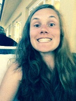

Lotte Jespers

Ik ben Lotte Jespers, geboren op 29/10/1993. Studente Toegepaste Informartica aan de Hogeschool Gent.
Hobby's
Ik verzorg de website van een 2e leerjaar. Zo maken de ouders kennis met wat de kinderen in de klas doen.
In mijn vrije tijd hou ik me graag bezig met foto's maken. Met m'n fototoesel in de hand vertrek ik en zie dan wel waar ik terechtkom. Het resultaat mag er dan wel zijn.
Tijdens de vakanties geef ik vaak sportkampen. Daar sta ik in voor de knutselactiviteiten. Hier kan ik mijn creativiteit de vrije loop laten. Dit helpt me ook even om te ontspannen.
Als er nog tijd overblijft dan ben ik wel eens aan het babysitten. Ik ben graag met kinderen bezig. Kinderen en dan vooral kleuters helpen én zien ontwikkelen door de dingen die je met hen doet is dan ook super.